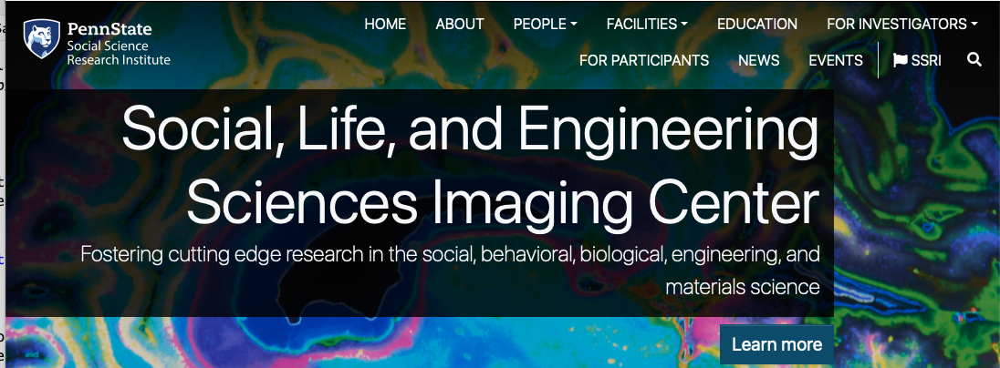
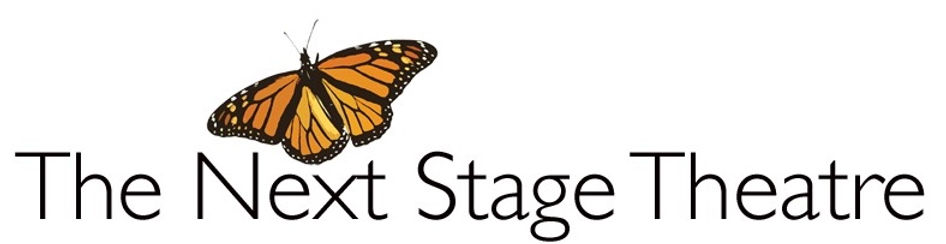

Open Scholarship Bootcamp 2025
Day 1 Welcome








…The initial aim of the project was to repeat 193 experiments from 53 high-impact papers…However, the various barriers and challenges we encountered while designing and conducting the experiments meant that we were only able to repeat 50 experiments from 23 papers…
Errington, Denis, Perfito, Iorns, & Nosek (2021)
…the data needed to compute effect sizes and conduct power analyses was publicly accessible for just 4 of 193 experiments…none of the 193 experiments were described in sufficient detail in the original paper to enable us to design protocols to repeat the experiments…
Errington et al. (2021)
…While authors were extremely or very helpful for 41% of experiments, they were minimally helpful for 9% of experiments, and not at all helpful (or did not respond to us) for 32% of experiments…
Errington et al. (2021)
…This experience draws attention to a basic and fundamental concern about replication – it is hard to assess whether reported findings are credible.
Errington et al. (2021)


Figure 1: % of U.S. adults who said science has had a(n) ___ effect on society

Figure 2: % of U.S. adults who say…

Houtkoop et al. (2018) Figure 2

Tenopir et al. (2020)
Feynman (1974)
“The first principle is that you must not fool yourself—and you are the easiest person to fool. So you have to be very careful about that. After you’ve not fooled yourself, it’s easy not to fool other scientists.”

Twain (1997)
Courage is resistance to fear, mastery of fear—not absence of fear.

Merton (1973)
- Communalism (common ownership)
- Universalism (independent validity)
- Disinterestedness (public benefit)
- Organized skepticism (scrutinize everything)

Merton (1973)
The mores of science possess a methodologic rationale…They are procedurally efficent…

https://teacherhead.com/2017/02/27/reinventing-the-wheel-again/